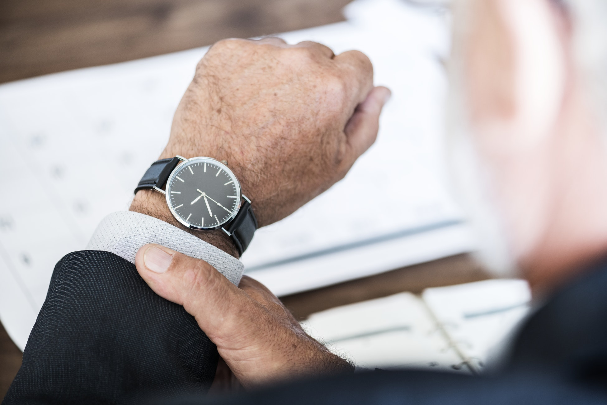
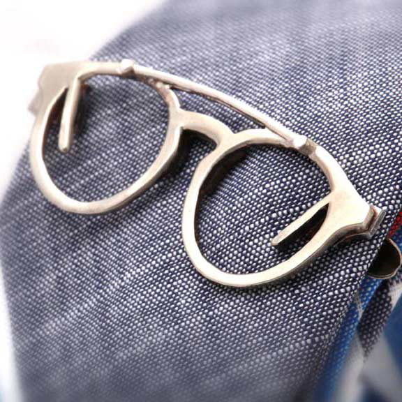

Costumele bărbătești sunt elegante și reprezintă un important stil de modă pentru bărbați. De fapt, mulți bărbați încep să îl poarte din ce în ce mai des în weekend. Accesorizarea, totuși, este la fel de importantă precum purtarea costumului în sine. În acest articol vă vom prezenta cele mai populare și bune articole pe care trebuie să le aveți atunci când purtați un costum.
Cravata
Un costum bărbătesc este pur și simplu incomplet fără cravată. Indiferent de locul unde purtați costumul, alegeți-vă cu atenție cravata pentru a accentua, dar nu distrage atenția de la ținuta generală. O cravată de mătase cu un model potrivit, cum ar fi dungi sau puncte, este potrivită pentru un costum care anunță o întâlnire de afaceri, în timp ce cravatele în culori aprinse și modele îndrăznețe vă arată personalitatea în afara întâlnirilor de afaceri. Învață mai multe despre cum poți asorta cravata cu cămașa sau sacoul în acest articol.
Batista de buzunar
Acesta este un accesoriu foarte bun care adaugă culoare și personalitate costumului tău. Este bine să vă asortați cravatele și batistele prin intermediul unor seturi personalizate pentru ca, puse împreună, să vă ofere un aspect curat și elegant. Alegeți o batistă de buzunar care să se potrivească cu o culoare mai aprinsă de pe cravată sau una neutră pentru a echilibra contrastul.
Butonii
Acest accesoriu poate fi purtat numai cu manșete franțuzești și adaugă o notă fină de stil costumului tău. Având în vedere că manșetele franțuzești sunt din ce în ce mai populare, este ușor să adăugați butonii printre accesorii atunci când purtați un costum. Alegeți o pereche sofisticată cu detalii fine atunci când aveți o întâlnire importantă și una simplă atunci când ieșiți cu prietenii în oraș.
Ceasul

Ceasul cu siguranță nu trebuie să lipsească și acesta trebuie să fie cel puțin la fel de elegant ca și costumul pe care îl purtați. Pentru zilele la birou este bine să porți un ceas cu funcții multiple pentru a vă putea folosi cât mai mult de el pe timpul zilei. Dacă mergi la o nuntă sau o petrecere recomandăm să porți un ceas simplu.
Acul de cravată

Un ac de cravată nu este doar un detaliu la modă, ci este și funcțional. Funcționează pentru a vă menține cravata îngrijită și neșifonată pe tot parcursul zilei. Acestea nu vor deteriora cravata și o vor menține lipită de cămașă.